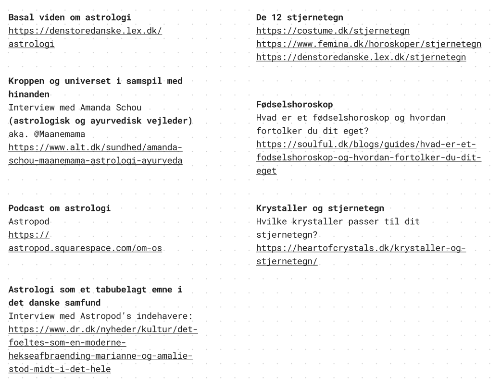
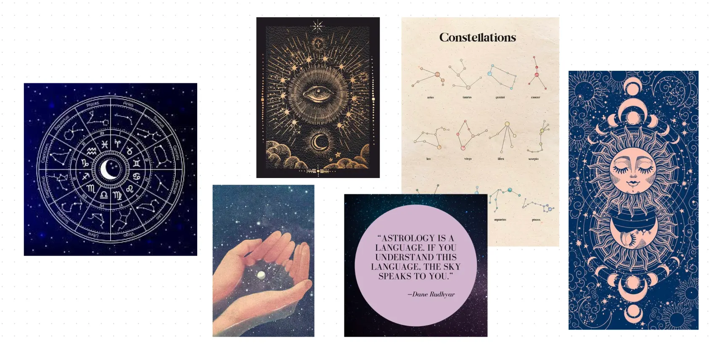
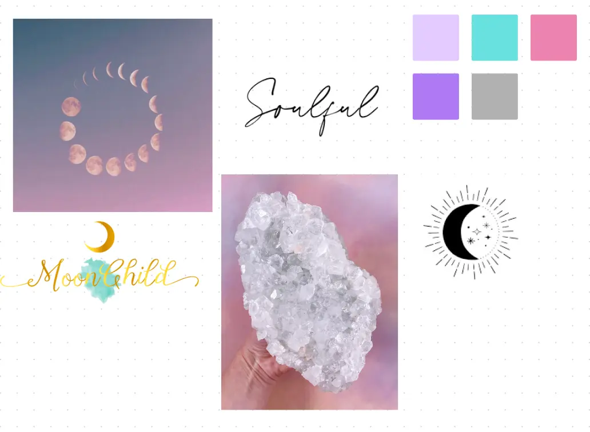
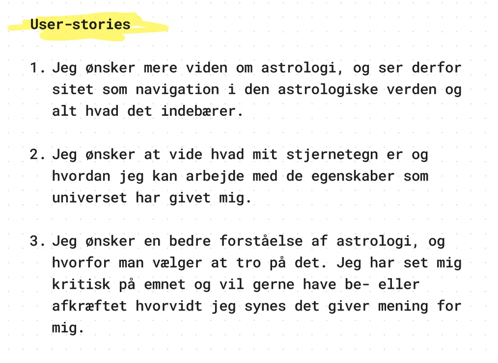
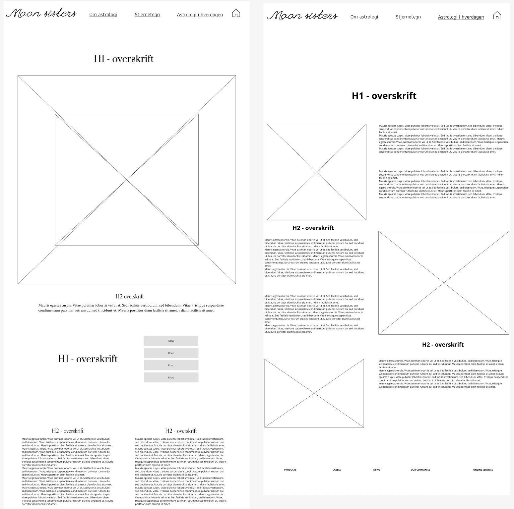
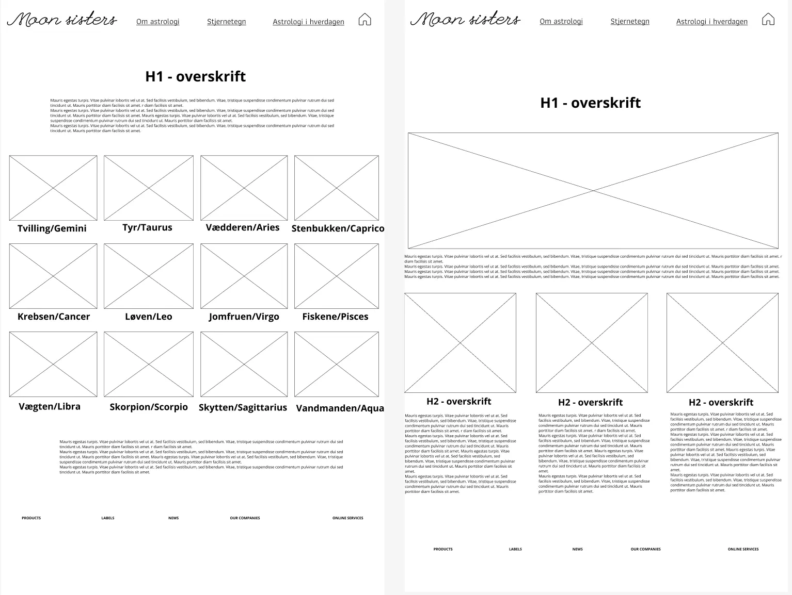
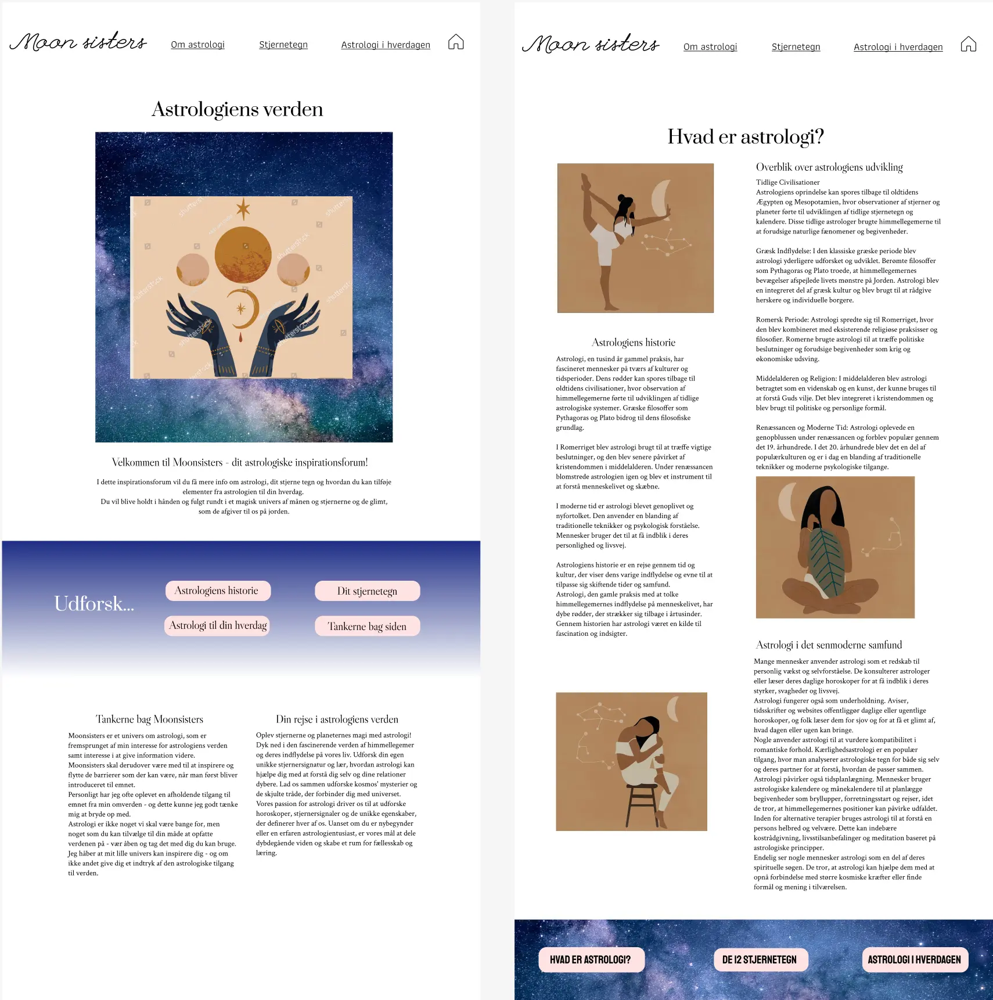
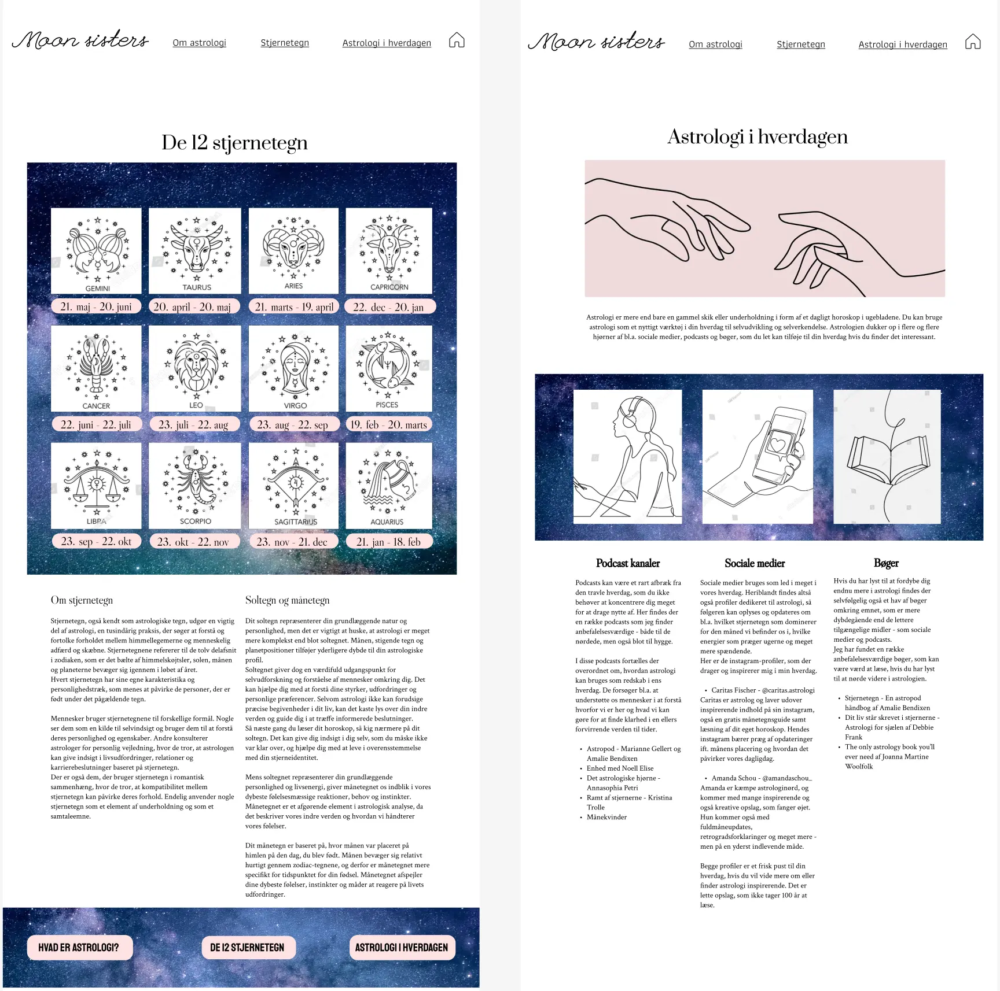
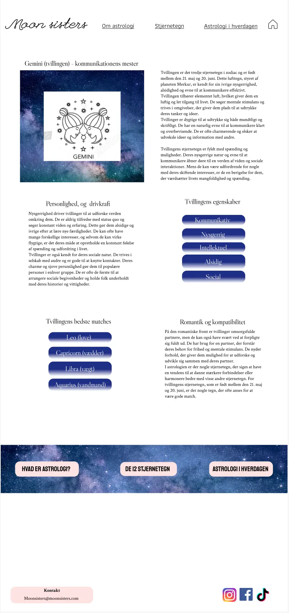
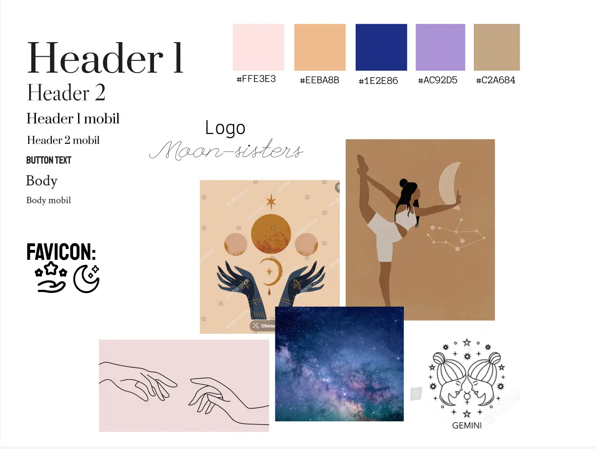

Research og idéudvikling
Deskresearch
Inden udarbejdelse af selve sitet, har jeg lavet en research på emnet, samt mindmaps og moodboards for at danne mig et billede af emnet og de muligheder der var for designet. Nedenfor ses de led i idéudviklingen, som jeg benyttede mig af.
Jeg benyttede mig bl.a. af desk-research for, at danne mig et indtryk af emnets omfang og hvorvidt mit site kunne være brugbart for brugeren.
Moodboards
Moodboards har jeg brugt for at danne mig et overblik over den stil jeg ønskede for sitet, og hvilke farver jeg fandt passende til emnet og målgruppen.
 Userstories
For at klargøre sidens formål for mig selv, udarbejdede jeg userstories, som skal vise sidens formål fra den potentielle brugers perspektiv. Herunder ses mine eksempler på userstories.
Wireframes
I processen har jeg udarbejdet Lo-Fi og Hi-Fi wireframes, for at designe min side inden kodningen fandt sted. Wireframes bruges for at danne et overblik til mig selv, og gør det også muligt at afprøve forskellige designs uden at skulle kode dem.
Lo-Fi wireframes
Disse wireframes er de mest basale, som blot skal vise mine tanker ift. opstilling af sitet og features ift. brugervenlighed.
 Hi-Fi wireframes
Disse wireframes er en form for prototype for det endelige site. Dog valgte jeg blot at kode 3 af disse, da tiden ikke var der til at kode resten. Min idé var dog, at siden skulle have været større og have indeholdt flere informationer og features for brugeren.
  Stil og design
Styletile
Til sidst udarbejdede jeg et styletile. Dette indeholder et overblik over mine endelige valg af de visuelle aspekter. Heriblandt skrift-typer og -størrelser, farvekoder, logo, favicon og et udpluk af billeder.
